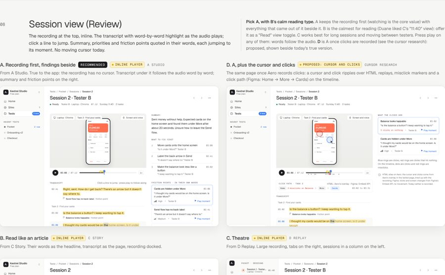
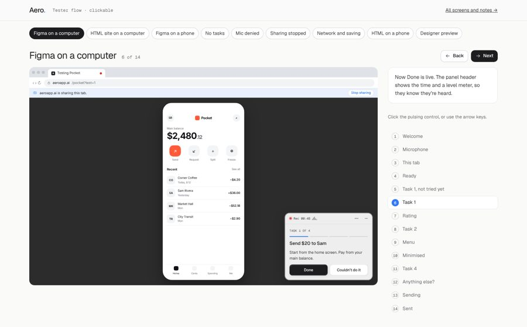
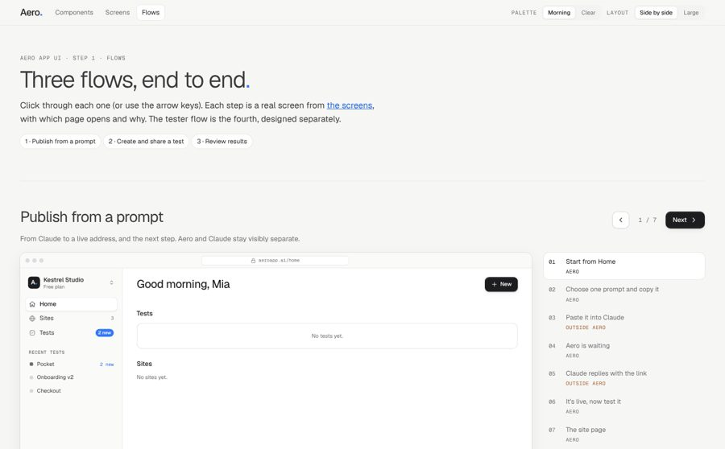
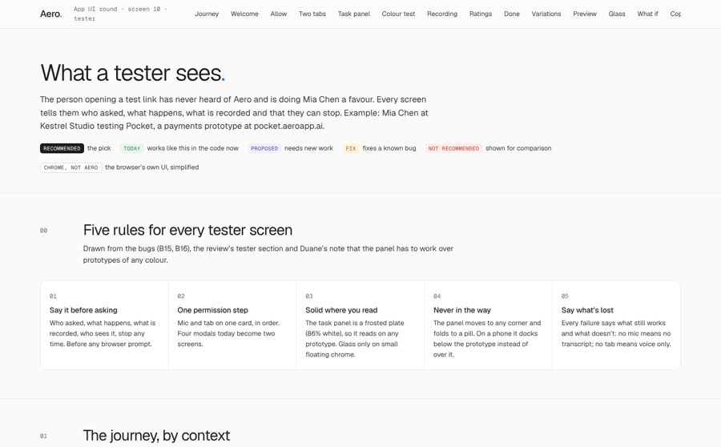
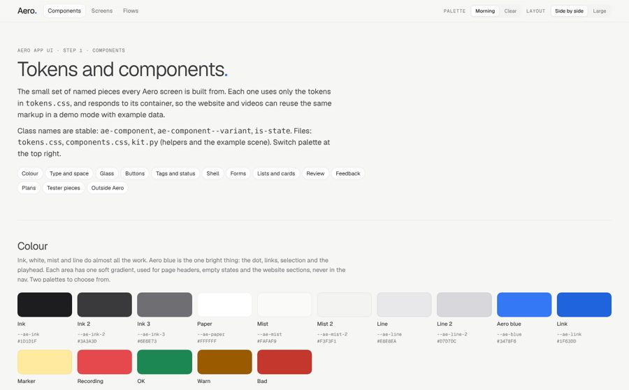

Aero app UI round · 23 October 2026
The whole app, screen by screen.
Step 1 of the design system plan: the UI first, because the website and videos will be built from it. Every screen shows the best approaches from the four mockup directions side by side, in the chosen brand (Geist, the blue dot, V3 glass). Each comes with its states and notes on what is true today and what is Proposed.
Example studio: Kestrel Studio (Mia Chen). Everything is labelled where it needs new work: the inline player, cursor tracking, QR code, insights built on the server.

ScreensEvery screen in the app, 2 to 4 approaches side by side, with loading, empty, processing and error states. Press play in the session view: the transcript follows the audio word by word.

Tester flow (clickable)What a tester sees, in nine scenarios and 53 steps: Figma or HTML, computer or phone, no tasks, mic denied, sharing stopped, network lost, the designer preview.

Designer flows (clickable)Publish from a prompt (Claude shown as a separate, labelled step), create and share a test, review results.

Tester screens boardEvery tester step and variation, plus the task panel tested over six prototypes of different colours.

ComponentsThe shared parts both the app and, later, the website and videos are built from: tokens, two palettes, buttons with V3 glass, rows, player, transcript line, friction card.
Decisions I need from you
- Palette Morning (peach, lilac, mint) or Clear (butter, rose, sea) for Publish, Test, Review. Toggle at the top of Screens.
- Home A "what’s new" feed (recommended), three Publish / Test / Review areas, or one card per prototype.
- Session view Recording first with findings beside it (recommended), plus a toggle to the calmer article-style view? And should cursor tracking be scheduled?
- Over the Free limit Block new sessions, or record them and hide them until upgrade.
- Studios Build real studios (teams), or keep a simple account switcher.
- Glass in the app On one primary button per view, the floating player controls and the tester’s minimised pill. Not on panels.
- Tester task panel A frosted plate (passes contrast over every test prototype) or keep some glass on it. Today’s panel fails on white.
- Panel opacity 86% (the shared token, a little grey on dark prototypes) or 94% (cleaner).
- Figma on desktop The task panel floating over the prototype, or docked in a side rail.
- Open as a tester Should the designer’s preview record a practice session?
- Thank-you screen Keep a small "Test made with Aero" footer?
Weak spots to know about: the plans page is a plain grid; the help articles aren’t designed yet; phone layouts show one approach per screen; the HTML two-tab tester flow is still the hardest part for testers and needs a technical change to improve properly. Open in Chrome for the glass refraction.